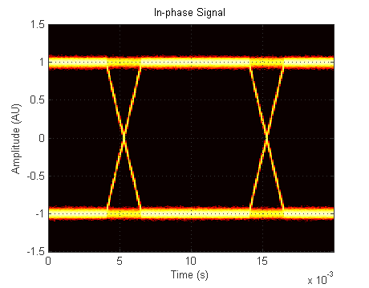
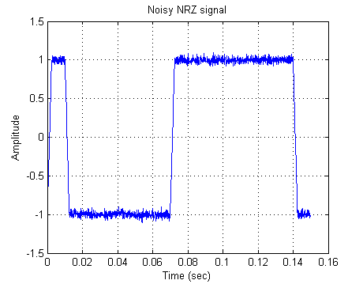
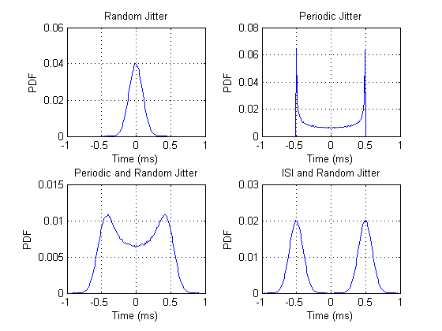
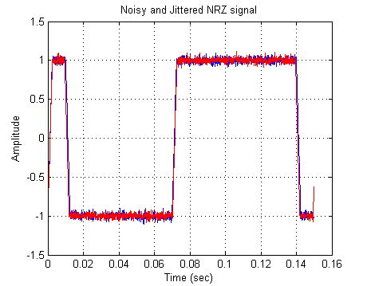
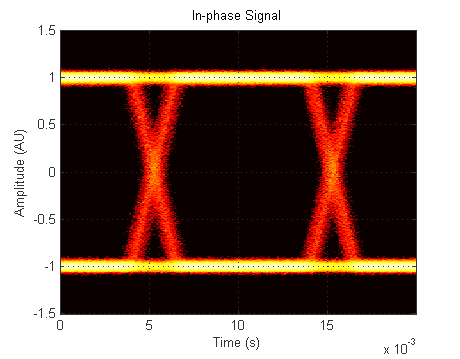
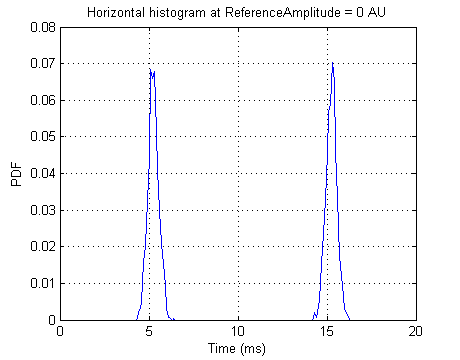
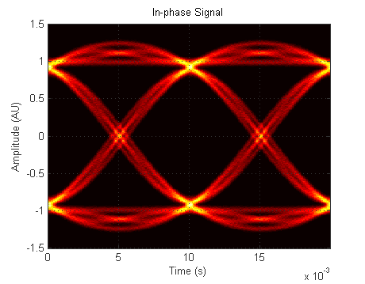
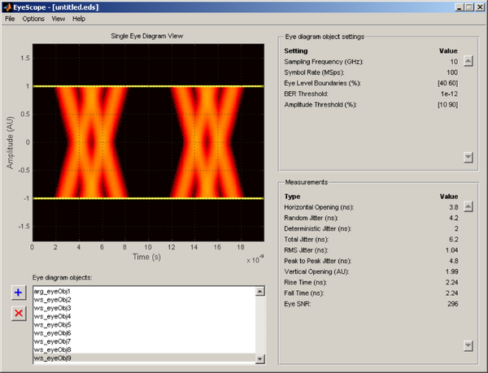
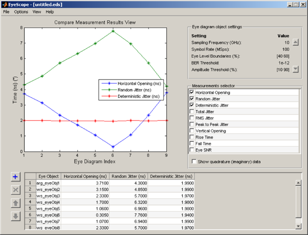

Eye Diagram Measurements
This demonstration shows how to use the COMMSCOPE.EYEDIAGRAM object to perform eye diagram measurements on simulated signals.
Contents
Using the EYEDIAGRAM Object
The COMMSCOPE.EYEDIAGRAM object collects eye diagram data in the form of vertical and horizontal histograms. We can utilize these histograms to extract quantitative metrics on the system under test. These quantitative metrics are called eye diagram measurements. The following simulation parameters are chosen to provide a high resolution for the analysis.
% Initialize system parameters Fs = 10000; % Sampling frequency (Hz) Rs = 100; % Symbol rate (Sps) nSamps = Fs/Rs; % Number of samples per symbol SNR = 30; % Signal to noise ratio (dB) Trise = 1/(5*Rs); % Rise time of the NRZ signal Tfall = 1/(5*Rs); % Fall time of the NRZ signal frameLen = 5000; % Number of symbols in a frame
The following code generates a binary non-return-to-zero (NRZ) signal utilizing the pattern generator provided in the communication sources package. Then we add additive white Gaussian noise (AWGN) to this signal. The figure on the right shows the time domain signal. Another way to examine the signal characteristics is to generate the signal's eye diagram using the eye diagram object. Note that the SymbolsPerTrace property, which represents the number of symbols in a trace of the eye diagram, should be set to two to perform the measurements. The figure on the left shows the eye diagram of the same signal. The specified MeasurementDelay value is set to ensure that the eye is centered in the figure. For more detail on using the eye diagram object, please refer to the documentation (type "doc commscope.eyediagram" on the command line) or the demonstration Eye Diagram and Scatter Plot.
% Set up the pattern generator hSrc = commsrc.pattern(... 'RiseTime', Trise, ... 'FallTime', Tfall) %#ok % Generate NRZ signal and add AWGN msgSymbols = generate(hSrc, frameLen); msgRx = awgn(msgSymbols, SNR, 'measured'); % Create an eye diagram and display properties eyeObj = commscope.eyediagram(... 'MinimumAmplitude', -1.5, ... 'MaximumAmplitude', 1.5, ... 'MeasurementDelay', 0.006, ... 'ColorScale', 'log') %#ok % Update the eye diagram object with the noisy NRZ signal update(eyeObj, msgRx); % Plot the time domain signal t = 0:1/Fs:15/Rs-1/Fs; idx = round(t*Fs+1); hFig = figure('Position', [0 0 460 360]); plot(t, msgRx(idx)); title('Noisy NRZ signal');xlabel('Time (sec)');ylabel('Amplitude');grid on; managescattereyefig(hFig, eyeObj, 'left')
hSrc =
Type: 'Pattern Generator'
SamplingFrequency: 10000
SamplesPerSymbol: 100
SymbolRate: 100
PulseType: 'NRZ'
OutputLevels: [-1 1]
RiseTime: 0.0020
FallTime: 0.0020
DataPattern: 'PRBS7'
Jitter: [1x1 commsrc.combinedjitter]
eyeObj =
Type: 'Eye Diagram'
SamplingFrequency: 10000
SamplesPerSymbol: 100
SymbolRate: 100
SymbolsPerTrace: 2
MinimumAmplitude: -1.5000
MaximumAmplitude: 1.5000
AmplitudeResolution: 0.0100
MeasurementDelay: 0.0060
OperationMode: 'Real Signal'
PlotType: '2D Color'
PlotTimeOffset: 0
RefreshPlot: 'on'
PlotPDFRange: [0 1]
ColorScale: 'log'
SamplesProcessed: 0
Measurements: [1x1 commscope.eyemeasurements]
MeasurementSetup: [1x1 commscope.eyemeasurementsetup]
  An important characteristic of communication signals, especially in high speed applications such as backplane communications, is the timing jitter. Timing jitter is defined as the deviation of a signal's timing clock from the ideal clock. Timing jitter can be divided into two main subcategories: deterministic and random jitter [1]. Two examples of deterministic jitter are periodic jitter and inter-symbol interference (ISI).
Periodic jitter can be modeled as a sum a sinusiodals, while ISI can be modeled as a train of Dirac functions. Random jitter is modeled as Gaussian variation of the signal clock edges.
The jitter encountered in a communication system can be any combination of these components. A commonly used combination is the dual-Dirac model, where ISI and random jitter are combined [2]. ISI is modeled by two equal amplitude Dirac functions. The following figure shows the probability density functions of random jitter, periodic jitter, periodic and random jitter, and ISI and random jitter. We generated the jitter samples using the jitter generator provided in the communication sources package.
histEdges = -0.1/Rs:1/(10*Fs):0.1/Rs; hFigPdf = figure; % Obtain PDF of random jitter generated by the combined jitter object hJitter = commsrc.combinedjitter('RandomJitter', 'on', 'RandomStd', 0.01/Rs); jitter = generate(hJitter, 1e6); rjPdf = histc(jitter, histEdges); rjPdf = rjPdf / sum(rjPdf); subplot(221);plot(histEdges*1e3,rjPdf);grid on; title('Random Jitter');xlabel('Time (ms)');ylabel('PDF') % Obtain PDF of periodic jitter set(hJitter, 'RandomJitter', 'off', 'PeriodicJitter', 'on', ... 'PeriodicAmplitude', 0.05/Rs, 'PeriodicFrequency', 1/33); jitter = generate(hJitter, 1e6); rjPdf = histc(jitter, histEdges); rjPdf = rjPdf / sum(rjPdf); subplot(222);plot(histEdges*1e3,rjPdf);grid on; title('Periodic Jitter');xlabel('Time (ms)');ylabel('PDF') % Obtain PDF of random and periodic jitter hJitter.RandomJitter = 'on'; jitter = generate(hJitter, 1e6); rjPdf = histc(jitter, histEdges); rjPdf = rjPdf / sum(rjPdf); subplot(223);plot(histEdges*1e3,rjPdf);grid on; title('Periodic and Random Jitter');xlabel('Time (ms)');ylabel('PDF') % Obtain PDF of ISI and Random Jitter hJitter.PeriodicJitter = 'off'; set(hJitter, 'DiracJitter', 'on', 'DiracDelta', 0.05/Rs*[-1 1]); jitter = generate(hJitter, 1e6); rjPdf = histc(jitter, histEdges); rjPdf = rjPdf / sum(rjPdf); subplot(224);plot(histEdges*1e3,rjPdf);grid on; title('ISI and Random Jitter');xlabel('Time (ms)');ylabel('PDF')
We can use the same jitter object in the pattern generator to inject jitter to the output signal. The following code generates a signal that is impaired not only by AWGN but also by random jitter. This example uses the same message data as in the previous case and compares the two signals. Note that the effect of jitter on the signal is not clear in this time domain figure.
close(hFigPdf);close(eyeObj); % Attach the jitter object to the pattern generator hSrc.Jitter = hJitter; % Generate only random jitter with standard deviation 0.3 ms. hSrc.Jitter.DiracJitter = 'off'; hSrc.Jitter.RandomJitter = 'on'; hSrc.Jitter.RandomStd = 0.3e-3; % Generate NRZ signal with random jitter and add AWGN reset(hSrc); msgSymbols = generate(hSrc, frameLen); msgRx = awgn(msgSymbols, SNR, 'measured'); % Plot the jittered noisy NRZ signal with the noisy signal t = 0:1/Fs:15/Rs-1/Fs; idx = round(t*Fs+1); figure(hFig);hold on;plot(t, msgRx(idx), 'r'); title('Noisy and Jittered NRZ signal'); xlabel('Time (sec)'); ylabel('Amplitude'); grid on;
The effect of jitter is better illustrated by the eye diagram of the signal. The figure on the left shows the eye diagram of a signal with random jitter, while the figure on the right shows the eye diagram of a signal without jitter. The width of the jittered signal at the zero amplitude level is considerably larger than the width of the non-jittered signal as a result of the added random jitter. Note that even though this demo focuses on real signals, the eye diagram object can also handle complex signals if the OperationMode property is set to 'Complex Signal'.
close(hFig) % Make a copy of the eye diagram object and reset eyeObjJitter = copy(eyeObj); reset(eyeObjJitter); % Update the eye diagram object with the noisy, jittered signal update(eyeObjJitter, msgRx); % Bring up the previous eye diagram for comparison plot(eyeObj); plot(eyeObjJitter); managescattereyefig([], [eyeObjJitter eyeObj])
The horizontal histogram can be utilized to examine the jitter characteristics more closely. The horizontal histogram is calculated at the reference amplitude level determined by the measurement setup property ReferenceAmplitude, within a band given by the CrossingBandWidth property. The figure shows the horizontal histogram at the ReferenceAmplitude level, which is 0 Amplitude Units (AU). Since the eye diagram traces two symbol durations, it crosses the reference amplitude level at two locations, 5 ms and 15 ms. Note that the symbol duration is 10 ms. Also, both crossings have Gaussian characteristics since the signal is impaired with random jitter.
close(eyeObj) % Echo measurements setup eyeObjJitter.MeasurementSetup % Export the histogram data [verHist eyeLine horHist] = exportdata(eyeObjJitter); % Plot the horizontal histogram t = 0:1/Fs:(eyeObjJitter.SymbolsPerTrace/eyeObjJitter.SymbolRate)-1/Fs; hFig=figure('Position', [0 0 460 360]); refAmpIdx=(size(horHist,1)+1)/2; plot(1e3*t,horHist(refAmpIdx,:)/sum(horHist(refAmpIdx,:))); grid on;xlabel('Time (ms)');ylabel('PDF'); title(sprintf('Horizontal histogram at ReferenceAmplitude = %d AU', ... eyeObjJitter.MeasurementSetup.ReferenceAmplitude(1))) managescattereyefig(hFig, eyeObjJitter)
ans =
Type: 'Eye Diagram Measurement Setup'
EyeLevelBoundary: [40 60]
ReferenceAmplitude: [2x1 double]
CrossingBandWidth: 0.0500
BERThreshold: 1.0000e-012
AmplitudeThreshold: [10 90]
JitterHysteresis: 0
 The following code runs a simulation with random jitter, ISI, and AWGN. ISI is introduced by passing the signal through a raised cosine filter. The JitterHysteresis property is set to a value such that level crossings due to noise are suppressed. Note that changing any property of the MeasurementSetup resets the eye diagram object. The MeasurementDelay is set to a value greater than the filter delay to eliminate the transient part of the signal.
The simulation runs in a for-loop so that the eye diagram object can be updated with enough symbols without running out of memory. After analyzing the collected data, the EyeDelay value is used to determine the proper PlotTimeOffset value to center the eye in the figure. Note that the PlotTimeOffset only applies to the figure and does not influence the measurement values.
close(eyeObjJitter); close(hFig) % Set the jitter parameters hSrc.Jitter.RandomStd = 0.1e-3; % Set jitter hysteresis value, measurement delay, and color scale eyeObj.MeasurementSetup.JitterHysteresis = 0.1; eyeObj.MeasurementDelay = 6/Rs; eyeObj.ColorScale = 'linear'; % Set up the square root raised cosine filter hdFilt = fdesign.pulseshaping(nSamps, 'Square Root Raised Cosine', ... 'Nsym,Beta', 6, 0.5); hTxFlt = design(hdFilt); hTxFlt.PersistentMemory = true; % Run simulation frameLen = 1000;numFrames = 20;lastSymbol = 0;lastJitter = 0; for p=1:numFrames % Generate jittered signal msgSymbols = generate(hSrc, frameLen); % Add ISI and noise msgISI = hTxFlt.filter(msgSymbols); msgRx = awgn(msgISI, SNR, 'measured'); % Update the eye diagram object with the signal eyeObj.update(msgRx); end % Center the eye timeOffsetSamps = eyeObj.SamplesPerSymbol - Fs*eyeObj.Measurements.EyeDelay; eyeObj.PlotTimeOffset = round(timeOffsetSamps)/Fs;
After collecting the histogram data, we can run the analysis and obtain eye diagram measurement results. The ANALYZE method of the eye diagram object performs the measurements. The analysis results are stored in the Measurements property. The EyeCrossingTime property stores the crossing times, which are around 1 ms and 11 ms. The crossing point amplitudes are given in the EyeCrossingAmplitude property. For a detailed explanation of the measurements, please refer to the documentation (type "doc commscope.eyediagram" on the command line). Note that since the simulation was run using only 20000 symbols, the results are not very accurate.
% Perform eye diagram measurements analyze(eyeObj); % Display the measurement results eyeObj.Measurements
ans =
Type: 'Eye Diagram Measurements'
DisplayMode: 'Optimized for Real Signal'
EyeCrossingTime: [0.0011 0.0111]
EyeCrossingAmplitude: [0.0077 0.0076]
EyeDelay: 0.0061
EyeLevel: [-0.9171 0.9184]
EyeAmplitude: 1.8355
EyeHeight: 1.3321
EyeCrossingPercentage: 50.3808
EyeOpeningVertical: 1.2361
EyeSNR: 10.9386
QualityFactor: 23.8242
EyeWidth: 0.0075
EyeOpeningHorizontal: 0.0079
JitterRandom: 8.6752e-004
JitterDeterministic: 0.0013
JitterTotal: 0.0021
JitterRMS: 3.8291e-004
JitterPeakToPeak: 0.0017
EyeRiseTime: 0.0070
EyeFallTime: 0.0070
Using the EyeScope with Multiple Eye Diagram Objects
We can use the EyeScope GUI to examine results stored in multiple eye diagram objects. As an example, we ran an experiment to examine the effect of random jitter on an NRZ system with 10 GSps symbol rate. We set the deterministic jitter to 2 ns. We first increased the standard deviation of the random jitter from 300 ps to 550 ps, in 50 ps steps. Then we decreased the jitter from 500 ps to 300 ps in 100 ps steps. We processed 1e6 symbols for each case. Due to time constraints, we ran the experiment off-line and stored the results in a MAT file. Type "edit commeye_generateEyeMeasureDemoData" to see the code used to generate this data set. We imported the eye diagram objects from this experiment to the EyeScope. The following figure shows the "Single Eye Diagram View" of the EyeScope.
close(eyeObj) % Load the simulation results load('commeye_EyeMeasureDemoData') % Start the EyeScope with the first eye diagram object hEyeScope2 = eyescope(eyeObj1); % Add the rest of the eye diagram objects to the EyeScope commeye_addEyeDiagramObjects(hEyeScope2, load('commeye_EyeMeasureDemoData'))
We can compare the measurement results from all the eye diagram objects using the "Compare Measurement Results View" of the EyeScope. The following figure shows the measurement results for Horizontal Opening, Random Jitter, and Deterministic Jitter. Since Random Jitter is measured for a bit error rate of 1e-12 (see the BER Threshold property), the expected value of random jitter is about 14 times the standard deviation of the jitter samples. For example, for a standard deviation of 300 ps (eyeObj1 and eyeObj9), the random jitter at BER = 1e-12 is 4.2 ns.
% Switch to the compare measurement results view commeye_eyeScopeView(hEyeScope2, 'compare')
References:
[1] Ou N. et al., "Jitter Models for the Design and Test of
Gbps-Speed Serial Interconnects," IEEE(R) Design & Test of Computers,
Vol. 21, July-August 2004, pp. 302-313.
[2] Stephens R., "Jitter Analysis: The dual-Dirac Model, RJ/DJ, and
Q-Scale," Agilent Technologies(R) Whitepaper, 2004. Available from
www.Agilent.com.